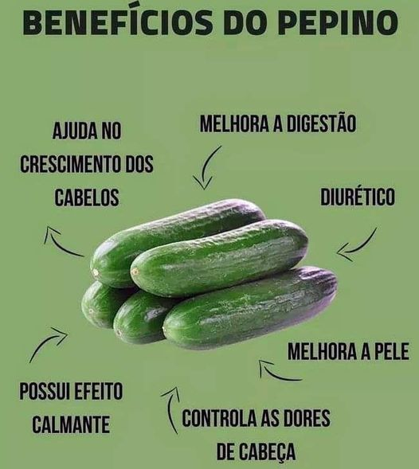
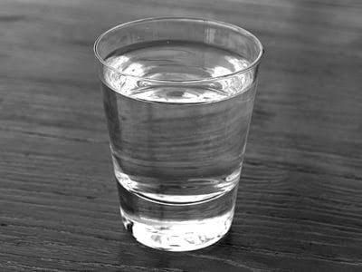
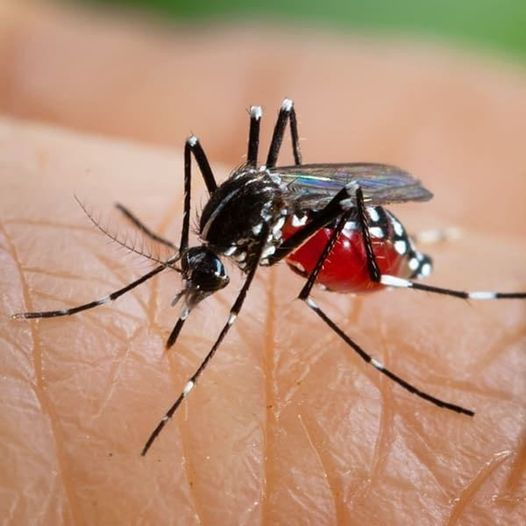
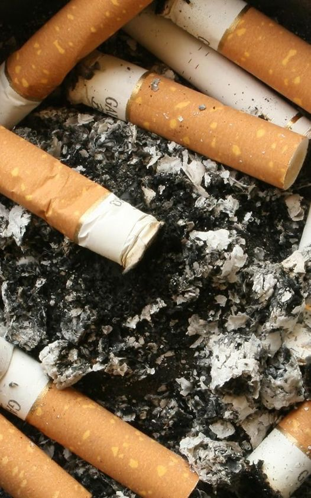
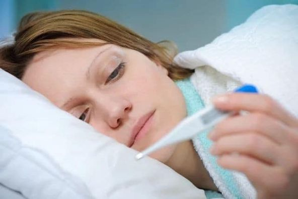

Recomendações
TUDO QUE VOCÊ PRECISA SABER 👇👇👇
Manga
Manga👇 Daqui apouco veremos em nossas bancas 😁 ,sabes o porquê que deves comprar e comer??? Elas são ricas em Se o assunto são as vitaminas da manga, destacam-se A e C, além de outros nutrientes importantes como fibras, antioxidantes, cálcio, zinco, potássio, ferro e magnésio. 🥭Como resultado, esse alimento traz diversos benefícios à saúde. Já tens motivos de comer😁. A proveita! Se tem uma fruta que nós ensina a respeitar o tema é a 🥭 Manga. Tudo tem o seu tempo aproveite 😁. Saúde em casa Saúde em casa

Cisto no Ovário
Mulheres com Cisto no Ovário podem engravidar?🫄 Sim, pois raramente cistos ovarianos causam infertilidade. Portanto, mulheres que possuem cisto no ovário podem engravidar (mesmo que seja somente no ovário esquerdo, direito ou ambos). O que acontece é que o cisto dificulta a gravidez, pelas alterações hormonais que causa. Por isso, para quem possui cisto no ovário e deseja engravidar, o recomendado é realizar a consulta e o acompanhamento ginecológico para obter uma orientação profissional sobre uma forma de tratamento adequada à gravidez.

Sorrir
Sorrir 🤣😘😘🤣 Sabes que faz bem??? 😁😂Sorrir rejuvenesce e aumenta a longevidade, pois movimenta a musculatura do rosto, ajudando a manter a elasticidade da pele. 😂😅Sorrir diminui a intensidade de emoções negativas como a tristeza e relaxa o corpo inteiro. 😁😄Alivia a tensão e o estresse e mantém os músculos relaxados por até 45 minutos

Roupas
Sabias que as roupas muito justas fazem mal a saúde???🎽👚 Pode até parecer inofensivo, mas o uso de roupas apertadas pode trazer consequências graves para a sua saúde. Usar roupas muito justas não aumenta só a retenção de líquidos e toxinas, mas também o risco de ter celulites e depósitos de gorduras em algumas partes do corpo. Fica a dica ☝️ Saúde em casa 😀

Sal
Sabias que o sal faz bem??? O sal é uma substancia vital para os seres humanos; nosso corpo possui sais que são regulados pelos rins e pela transpiração. O sódio está envolvido na contração muscular, incluindo os batimentos cardíacos, nos impulsos nervosos e na ingestão de proteínas. Sem o consumo de 🧂 sal a pessoa pode causar cretinismo em crianças (retardo mental grave e irreversível), surdo-mudez, anomalias congênitas, bem como a manifestação clínica mais visível – bócio (crescimento da glândula tireóide. Fica a dica ☝️. Saúde em casa 😁🏠

Doces
Sabias que os doces também fazem bem a saúde?? Então veja a dica👇👇 Doces também são fontes de minerais O açúcar também é rico em ferro, sódio, magnésio, vitamina B, cálcio e potássio, ajudando no fortalecimento de ossos e musculaturas. Quando tiveres a estudar muito e veres que a cabeça está a doer ,coma alguma coisa doce , porque deve ser que estais sem açúcar. Açúcar é energia. Fica a dica

🍺 Alcoolismo 🍻
🍺 Alcoolismo 🍻 Os problemas relacionados com o álcool ( inclusive morte por intoxicação,crime e acidente ) . Efeitos do álcool sobre o organismo O fígado aumenta de volume.Os resíduos do álcool destroem as células do fígado provocando uma inflamação.Essa inflamação é muito grave.Os olhos da pessoa ficam de cor amarelada,ela pode entrar em coma e morrer. A destruição das células também pode levar a uma lesão no fígado chamada virose hepática. Esta é uma doença grave e incurável. 🧪🌡️ Organismo afetado🌡️ *No aparelho digestivo o álcool provoca gastrite, úlcera, diabete e contribui para o aparecimento de câncer da língua,da faringe,do esófago,do estômago e do intestino. *O álcool pode provocar anemia *O álcool pode provocar gota e reumatismo.. *O alcoólatra é menos resistente a infecções e envelhece antes do tempo. *O álcool,com o tempo ,leva á impotência (5a 25). Mais dicas segue a página. Ou liga943021515

Doenças infecciosas
As doenças infecciosas são causadas por bactérias e outros organismos que prejudicam o nosso
corpo.Os organismos agressores entram no corpo de uma pessoa e "passam"de uma pessoa para a outra de
diferentes maneiras.
Os antibióticos ajudam a curar algumas doenças causas por bactérias.Não têm nenhum efeito nas
doenças causadas por vírus.Nunca trate infecções causadas por vírus com antibiótico,pois neste casos
o antibiótico não ajuda e pode fazer mal.
👍 Doenças causadas por bactérias
*Feridas com pus
*Tuberculose
*Tétano
*Meningite
*Pneumonia
*Gonorreia e sífilis
Cura com antibiótico
👍 Doenças causadas por vírus
*Resfriado
*Sarampo e cataporas
*Cacimba
*Paralisia infantil
*Raiva
*Verrugas.
Não curam com antibiótico.
Pra mais dicas segue a página 👍
Ou liga 943021515.

Hipertensão Arterial
Hipertensão Arterial: É uma Doença crônica não transmissível do sistema Cardiovascular❤️. Ela
determina-se por elevados níveis de pressão sanguínea nas artérias🌡️. O seu valor normal é de:
120/70 mmHg(milímetro de mercúrio).
Os seus factores de Risco incluem:
✓Estresse🤦
✓Consumo de Bebida alcoólica🍻
✓Sedentarismo
✓Idade🧑🦳 e até mesmo Factor genético👪.
Quando o indivíduo está com a mesma Patologia, tende apresentar os seguintes sintomas:
✓Cefaleia😞
✓Nausea e vómito
✓Alteração do nível de consciência ( Agitação, Prostração)😖
Sendo ela não tratável, a maneira de ser controlada é: Praticando ✓Exercícios físicos🏃; ✓Não abusar
do Sódio e por sua vez, evitando alimentos gordurosos🌭🍔.
"Melhor do que usar métodos Paliativos, o ideal é ser Profilático".
#SAÚDE EM CASA🫂
Precisas de alguém para aferir a tua pressão liga:943021515

Peidar

Abobrinha

Importância do atendimento domiciliar
Importância do atendimento domiciliar em enfermagem Por que é tão importante o atendimento domiciliar em enfermagem? Imagine uma pessoa fragilizada física e emocionalmente tendo que se deslocar de casa até um centro de atendimento em enfermagem. Pense nesse atendimento presencial em tempos de pandemia, que apenas é um reforço para o reconhecimento do quanto é prudente evitar, sempre que possível, o ambiente hospitalar. Portanto, o atendimento domiciliar ajuda a preservar a saúde física e emocional do paciente, mas não só por isso. Qualquer pessoa fragilizada se sente mais segura e confortável em casa, perto da família, sem contar com a criação de uma familiaridade entre o paciente e o profissional de enfermagem, que contribui para uma relação de confiança. A”Saúde em Casa” acredita no atendimento domiciliar, assim como na capacitação profissional e na tecnologia, como ferramenta de aceleração dos resultados no tratamento de feridas de alta complexidade. Saiba mais sobre nós
Água
Sabias que consumir muita água faz mal?? Vamos lá 👇 Beber muita água pode provocar o desequilíbrio na concentração de eletrólitos no sangue, principalmente o sódio. O problema é chamado de hiponatremia, que significa a queda do nível de sódio sanguíneo e pode levar, em situações muito graves, à intoxicação por água. Consuma o necessário que são 2 litros por dia. Vem e aprenda mais
Exercícios físicos
Sabias que uma das formas de se prevenir contra as doenças respiratórias é fazendo exercícios físicos???😱🤒👍 Vamos lá 👇 Não há dúvidas de que os exercícios físicos contribuem para o bem-estar e para a qualidade de vida. Exercitar o corpo traz benefícios comprovados à saúde, como a manutenção do peso ideal, da musculatura, diminuição do estresse, além de ajudar no desempenho da função respiratória e da atividade cardiovascular. Se não der para sair ,fassa como :@Saúde em casa😊. Aprenda aqui Vem e aprenda mais
Dormir
Sabias que dormir adequadamente faz parte da higiene pessoal???👇👇 👍Higiene é o conjunto de conhecimentos e técnicas que visam a promover a saúde e evitar as doenças. Entre as doenças que a higiene procura evitar, estão as doenças infecciosas, contra as quais ela se utiliza da desinfecção, esterilização e outros métodos de limpeza. Atenção 👇👇 Lavar as mãos; Escovar os dentes; Dormir adequadamente; Realizar atividades físicas. Fica a dica ☝️☝️. Dorma adequadamente para prevenir inúmeras doenças 🤗.
Alergias
Métodos caseiro para acabar com as alergias 👇.
* Chá verde. ...
*Vinagre de maçã ...
*Vitamina C. ...
*Chá de rooibos.
Fica a dica ☝️
Pepino
Tosse
A tosse é um reflexo benefício e protector que elimina os corpos irritantes da traquéia e dos brônquios. A tosse corresponde a uma saída explosiva de ar ,ao longo das vias respiratórias e através da 😄, transportando as partículas aspiradas ou produtos nocivos. Pra mais dica segue(@Saúde em casa) Ou liga 943 021 515
😊Dores abdominais 😭
A dor abdominal ou dor de barriga é uma ocorrência bastante comum, que pode estar relacionada a
problemas simples como má digestão ou excesso de gases, mas também pode indicar disfunções e doenças
em algum dos vários órgãos dessa região, como estômago, intestino, fígado, vesícula, bexiga e, no
caso das mulheres, útero ...
🤔 Tratamento 😚
#Buscopan
#Metronidazol .
🏠Qual o remédio caseiro que é bom para dor de barriga?
👍Faça compressas de água quente
Obs: Primeiros socorros.
Depois dirija-se para um hospital.
Pra mais informações liga
943 021 515
Segue a página pra mais dicas
Alface
Laranja
🍊Sabes quais os benefícios que a laranja? 🍊É rica em betacaroteno, vitamina A e C, que são antioxidantes e anti-inflamatórios. Ou seja, seu consumo ajuda a combater os radicais livres que causam envelhecimento da pele. Saber as vitaminas das frutas nós ajuda a conhecer o que comer e quando comer👍. Para mais dicas segue a página Saúde em casam casa em casa Ou liga 943 021 515

Masturbação
😱 Já ouviste falar que masturbação causa impotência sexual???😱 Não, isso na verdade é um mito. Diversos estudos comprovaram que masturbação não causa impotência e nem deixa qualquer tipo de sequela. A impotência pode ser causada por alguma questão física, então é sempre importante passar por um Urologista para fazer exames e descartar possíveis problemas. Segue a página 👍 Saúde em casa. Instagram:Casa.saudeem Ou liga;943021515/958755857
Masturbação
😱Vinte mitos sobre masturbação que não são verdade:
1:Causa acne.
2:Faz crescer pelos nas mãos.
3:Causa cegueira ou qualquer outro problema visual.
4:Masturbar-se durante a menstruação faz mal.
5:Masturbar-se durante a gravidez faz mal.
6:Causa impotência.
7:Causa perda de memória ou qualquer outro problema cerebral.
8:Provoca insanidade.
9:Deixa um braço maior que o outro.
10:Faz crescer o peito em homens (ginecomastia).
11:Causa infertilidade.
12:Causa artrose.
13:Provoca sangramentos na urina.
14:Aumenta o tamanho o pênis.
15:Afina o pênis.
16;Causa infecção urinária.
17;Faz mal à saúde.
18:Provoca calvície.
19;Faz perder a virgindade.
20:Aumenta o risco de perverão sexual
Para mais dicas segue a página; Saúde em casa.
Instagram:Casa.saudeem.
Ou liga;943021515/958755857
😁 Cárie dentária 😁
A Cárie dentária é uma das doenças mais prevalentes no mundo.
É causada por tipos específicos de bactéria, que produzem ácidos que corroem (desmineralizam) o
esmalte do dente e, em casos mais avançados, a camada debaixo dele, também conhecida como dentina. É
comum que muitos tipos de bactéria vivam na boca humana.
😁 sintomas?
😁A principal causa das cáries é o acúmulo de bactérias na boca, vindas principalmente de alimentos
pegajosos e ricos em açúcares.
😁má higienização é o fator mais relevante para o surgimento das cáries nos dentes. É muito
importante trabalhar na prevenção, porque cáries podem causar até a queda dos dentes.
🪥 Prevenção ☺️👍
🪥Escovar os dentes regularmente é fundamental para prevenir as cáries. No entanto, para que a sua
escovação seja eficiente, é necessário que a sua escova de dentes esteja em um bom estado. Isso
significa que é preciso trocar a escova de dentes com regularidade, de preferência, de três em três
meses.
Para mais dicas segue a página;Saúde em casa.
Instagram;Casa.Saudeem.
Liga:943021515
Higiene Íntima
🤔O que a falta de higiene íntima pode causar? A falta de higiene íntima pode causar dois tipos de infecções vaginais, a candidíase –muito comum nas mulheres, tem como sinal a irritação vaginal, coceira intensa e corrimento branco, e a vaginose bacteriana – tem como sintomas o corrimento branco-acinzentado que pode ou não ter cheiro e a coceira vaginal. Ambas as complicações podem ser tratadas com medicamentos.
higiene Íntima.1
🤔 O risco em lavar mal a região íntima feminina😱👇👇
A região íntima feminina é uma porta de entrada para bactérias, fungos e vírus que podem causar
ardência, irritações, corrimentos, mau cheiro e até doenças.
Mas, alguns cuidados simples com a higiene íntima feminina, na hora do banho, de se vestir e em como
usar o papel higiênico, podem evitar essas complicações.
A começar pelo banho.
Lave a região com bastante água, por cerca de dois minutos, sempre no sentido região vaginal para a
anal, para evitar infecções que podem ser causadas por microrganismos presentes nas fezes. Logo
após, seque a região com toalha de algodão.
Cuide da sua saúde porque nós importa👍
Saúde em casa 🏠😀
Saliva(Cuspi)
A saliva é constituída maioritariamente por água (cerca de 99.5%). O restante corresponde a mistura de várias substâncias químicas como: #substâncias que vão participar na digestão dos alimentos; #substâncias protectoras contra a acção de micróbios.

A malária
A malária 🦟,ou paludismo, é causada pelo protozoários #plasmodium , através do mosquito #Anopheles
.
O protozoário reproduz-se e espalha -se no indivíduo através da corrente sanguínea, invadindo as
hemácias e causando anemia.
O diagnóstico é efetuado através de análises sanguínea.
#sintomas
#febre alta
#sudorese (transpiração)
#calafrio
#palidez
#cansaço
#cefaleia
#doresmusculares .
Prevenção
A prevenção passa por evitar as picadas do mosquito 🦟,usando repelentes e mosquiteiros,e roupas que
cubra o corpo..
Saúde em casa
Se fores diagnosticado essa doença 🦟 e foi prescrito injeções, entre em contacto com nósco e iremos
cuidar de você em tua casa.
Ligue já
943 021 515
Ou 958755857
Siga a página (@Saúde em casa)

As doenças cardiovasculares
As doenças cardiovasculares estão associadas a erros alimentares, sedentarismo, tabagismo, alcoolismo e stress.Como prevenção deve-se controlar o stress,praticar exercícios físicos com regularidade, não fumante fazer uma alimentação correta,rica em frutos e vegetais e pobre em gorduras

😷 Halitose😄
O mau hálito, também conhecido como halitose, é o odor desagradável e persistente no ar exalado pela
boca.
Normalmente, a origem está na própria boca, rica em flora bacteriana com característica bactericida
e associada a variadas necessidades nutricionais.
Cuide bem da sua cavidade bucal 😄para evitar a halitose!
Dicas👍
Antes e a cada refeição lave bem a boca 😄.
Principalmente antes de dormir 😃.
Aqui fica a dica da @Saúde em casa
Para mais dica segue a nossa página: Facebook: Saúde em casa.
Instagram;Casa.saudeem
Ou ainda 943021515
Gastrite
A gastrite é uma inflamação do revestimento interno do estômago. Pode ser aguda, quando aparece de
repente e dura pouco, ou crônica, quando se instala aos poucos e leva muito tempo para ser
controlada.
Causas:
– uso prolongado de medicamentos como aspirina ou anti-inflamatórios;
– consumo de álcool;
– hábito de fumar;
– infecção pela bactéria Helicobacter pylori;
– gastrite autoimune – ocorre quando o sistema imune produz anticorpos que agridem e destroem as
células gástricas do próprio organismo.
Sintomas:
– dor de estômago intensa;
– azia;
– indigestão;
– sensação de estufamento;
– perda de apetite;
– náusea e vômito;
– presença de sangue nas fezes e no vômito.
Diagnóstico:
Baseia-se no exame físico e na análise da história clínica do paciente. O médico poderá solicitar
exames, como: raios-X, endoscopia e biópsia.
Tratamento:
O tratamento da gastrite tem de levar em conta a sua causa e, além dos medicamentos prescritos pelo
médico, é possível contornar o problema mudando a alimentação e melhorando o estilo de vida.
Prevenção:
– respeite os horários das refeições. Separar algum tempo para café da manhã, almoço e jantar
tranquilos não é luxo, é necessidade;
– prefira fazer pequenas refeições ao longo do dia a fazer uma grande refeição depois de muitas
horas em jejum;
– mastigue bem os alimentos, pois a digestão começa na boca;
– dê preferência a frutas menos ácidas, verduras e carnes magras. Evite:
– tomar analgésicos;
– café;
– chá mate;
– chocolate;
– refrigerantes;
– sal em excesso;
– enlatados;
– embutidos;
– bebidas alcoólicas;
– pimenta-do-reino;
– leite e derivados;
– frituras;
– gorduras em excesso.
Procure um médico e siga suas recomendações se tiver azia, má digestão e sensação de estômago cheio
depois de ingerir pequenas porções de alimentos.
IMPORTANTE: Somente médicos e cirurgiões-dentistas devidamente habilitados podem diagnosticar
doenças, indicar tratamentos e receitar remédios. As informações disponíveis em Dicas em Saúde
possuem apenas caráter educativo
Cuidamos de você em tua Saúde em casa liga943021515.
Coito
O Coito é a ligação íntima e profunda entre dois géneros de sexo oposto.
O sexo não é apenas um fator importante para o relacionamento. Além de queimar calorias, faz bem a
saúde, por intermédio do sexo, podemos liberar as nossas vias respiratórias que estão fechadas, por
interrupção de bactérias e vírus.
Quando nós não exercitamos as vias respiratórias , corremos o risco de contrair gripe, dores de
cabeça (cefaleias) tosse.
O sexo liberta muitas doenças do fórum respiratórias por processo de inspiração e expiração durante
o acto sexual ou seja no exercício físico.
.
1. Ter relações sexuais alivia dores de cabeça. Cada vez que você faz amor, libera a tensão das
veias do cérebro.
.
2. Um grande número de relações sexuais pode limpar o nariz entupido. Sexo é um anti-histamínico
natural. Ele ajuda a combater asma e alergias de primavera.
.
3. Fazer amor é um tratamento de beleza espetacular. Os cientistas descobriram que quando uma mulher
faz sexo, produz grandes quantidades de estrogênio que dá brilho e maciez ao cabelo.
.
4. O sexo é um dos esportes mais seguros. Fazer amor quase todos os tons e fortalece os músculos do
corpo feminino e masculino. É mais agradável do que nadar 20 voltas na piscina e não precisam de
tênis especiais!
.
5. Fazer amor devagar, suave e relaxadamente reduz as chances de sofrer dermatites, erupções na pele
e acne. O suor produzido limpa os poros e faz sua pele brilhar.
.
6. Fazer amor pode queimar todas as calorias que você acumulou nesse jantar romântico antes de
dormir.
.
7. Sexo é um santo remédio para a depressão. Ele libera endorfina na corrente sanguínea, criando um
estado de euforia e deixando mulheres e homens com um sentido de ser único.
.
8. O sexo é o tranquilizante e relaxante muscular mais seguro do mundo. É mil vezes mais eficaz do
que o Valium.
.
9. Quanto mais sexo melhor, pois um corpo sexualmente ativo libera bem mais feromônio. Este perfume
natural das glândulas do nosso corpo é imperceptível ao nosso nariz, mas que excita bastante as
mulheres!
.
10. Beijar todos dias mantém você mais tempo longe do dentista. A arte de Beijar faz com que a
saliva limpe os dentes e diminui a quantidade de ácido que causa a cárie dentária.
Febre
Medidas que podem ser feitas em casa para controlar a ferbe.
Febre não é uma doença, e sim um sintoma. Resposta certeira do organismo para o tratamento de
inflamações e infecções, o aumento da temperatura do corpo sinaliza uma atividade mais intensa do
sistema imunológico, prejudicando a ação de vírus e bactérias que eventualmente estejam nos
atacando. O essencial é não perder o sintoma e investigar a causa. A partir de 38 graus, os médicos
já identificam um quadro febril.
Outra medida importante é não medir a febre sem ajuda de um termômetro (usando o contato da pele), a
não ser que a pessoa já tenha experiência - mas mesmo assim, é quase impossível determinar a
gravidade exata da febre dessa forma. Existem termômetros que podem ser usados na axila ou na
própria boca, e existem os termômetros retais, que sempre mostram um grau a mais do que a
temperatura corporal real.
Segundo os especialistas, antes de ministrar qualquer medicação, é importante observar os outros
sintomas que podem aparecer relacionados com a febre - em alguns casos, o paciente pode estar com
uma doença cuja determinada classe de remédios é contraindicada, como no caso da dengue, que o
paciente não pode tomaros remédios à base de ácido acetilsalicílico.
MEDIDAS PARA CONTROLAR
# Faça compressas frias no tronco e membros: usar uma toalha úmida ou com uma bolsa térmica em
temperatura mais fria no tronco e nos membros pode ajudar a diminuir a temperatura do corpo. Segundo
especialistas, não há uma temperatura ideal, e geralmente a temperatura da água fria de uma torneira
basta. Um bom indicador é colocar a mão na água e ver se você tolera aquela temperatura - essa é a
temperatura ideal para resfriar a pele sem machucá-la.
A medida só não é indicada quando o paciente se queixa de muito frio e poderia se sentir mal em
contato com a umidade. É importante lembrar também que a aplicação prolongada de uma temperatura
muito baixa, em seu ponto de congelamento, pode acabar resultando em queimadura da pele e até
necrose do local
# Fique em repouso: a febre acelera os batimentos cardíacos, por isso o repouso é indicado, evitando
sobrecarregar o organismo. O repouso é importante também por que a movimentação durante um processo
febril pode ser extremamente desconfortável e pouco produtiva. Isso porque se o paciente não está no
melhor de sua habilidade, pode acidentalmente sofrer uma queda ou acabar se machucando. Por isso,
evite atividades que exigem muita força durante a febre e aguarde o quadro melhorar para retomar aos
poucos a sua rotina.br
# Tome um banho morno: uma boa ducha de água morna pode ajudar o paciente a recuperar a temperatura
ideal. Mas porque não água muito fria? O banho muito gelado pode levar a um aumento da frequência
cardíaca, que já está elevada por causa da febre. A duração do banho é determinada pelo paciente,
ficando a ressalva apenas para crianças que tiveram uma convulsão febril - para essas, segundo o
especialista, a ducha não é indicada.
# Prefira tecidos de algodão: vale um moletom ou uma camiseta de algodão. O importante é vestir
peças confortáveis. O algodão costuma ventilar melhor e reduz a sensação de desconforto,
principalmente durante o sono quando o paciente pode suar excessivamente. Se você estiver usando
peças sintéticas, o suor não será absorvido e sua pele pode ficar irritada, causando desconforto.
# Mantenha-se hidratado: tomar muita água e líquidos em geral, é essencial para baixar a temperatura
do corpo e prevenir casos de desidratação. Isso porque o calor da febre faz você suar demais,
havendo necessidade de repor os líquidos perdidos neste processo. Não é necessário ingerir mais água
do que o recomendado normalmente - a pessoa deve beber segundo sua sede. No caso de crianças
pequenas e bebês, líquidos devem ser ofertados com frequência. Observe se eles mantém fluxo urinário
regular para certificar a hidratação.
# Coma adequadamente: faça uma dieta leve, de digestão simples e adequada às suas preferências. Se
for um paciente adulto ou jovem, não há grandes preocupações com a quantidade de alimento que será
ingerida durante a febre. No entanto, se for uma pessoa com a saúde mais debilitada, como um idoso
que tenha algum tipo de doença, uma alimentação mais equilibrada pode ser determinante do curso da
doença. No geral, o gasto calórico aumenta durante a febre, e por isso uma dieta um pouco mais rica
em calorias pode beneficiar essas pessoas com a saúde mais comprometida.br
# Atenção ao uso de medicamentos: para tratar da febre, é preciso entendê-la e entender a sua
origem. Se a causa da febre for simples, como uma gripe, e não muito alta (até 38 graus), não há
razão para tratar de forma medicamentosa. No entanto, se ela estiver com dores pelo corpo, mal estar
e outros sintomas, o uso de um antitérmico pode ajudar. Febres acima de 38,5 ou 39 graus costumam
cursar com maior desconforto e são frequentemente medicadas, mas mesmo nestas temperaturas, se o
paciente não referir desconforto, uma boa opção é observar sem medicar. Uma exceção deve ser feita
no caso de crianças pequenas no qual a febre deve ser tratada para evitar a convulsão febril.

Câncer da próstata
🤔O que é a próstata? A próstata é uma glândula presente apenas nos homens, localizada na frente do reto, abaixo da bexiga, envolvendo a parte superior da uretra (canal por onde passa a urina). A próstata não é responsável pela ereção nem pelo orgasmo. Sua função é produzir um líquido que compõe parte do sêmen, que nutre e protege os espermatozoides. Em homens jovens, a próstata possui o tamanho de uma ameixa, mas seu tamanho aumenta com o avançar da idade. 🤔🤔Quais os fatores de riscos? *Idade: o risco aumenta com o avançar da idade. *Histórico de câncer na família: homens cujo o pai, avô ou irmão tiveram câncer de próstata antes dos 60 anos, fazem parte do grupo de risco. *Sobrepeso e obesidade: estudos recentes mostram maior risco de câncer de próstata em homens com peso corporal mais elevado. 🤔🤔 Como prevenir? 👍Já está comprovado que uma dieta rica em frutas, verduras, legumes, grãos e cereais integrais, e com menos gordura, principalmente as de origem animal, ajuda a diminuir o risco de câncer, como também de outras doenças crônicas não-transmissíveis. Nesse sentido, outros hábitos saudáveis também são recomendados, como fazer, no mínimo, 30 minutos diários de atividade física, manter o peso adequado à altura, diminuir o consumo de álcool e não fumar. Entre os fatores que mais ajudam a prevenir o câncer de próstata estão: *Ter uma alimentação saudável. *Manter o peso corporal adequado. *Praticar atividade física. *Não fumar. *Evitar o consumo de bebidas alcoólicas 🤔Sinais e sintomas Na fase inicial, o câncer de próstata pode não apresentar sintomas e, quando apresenta, os mais comuns são: *dificuldade de urinar; *demora em começar e terminar de urinar; *sangue na urina; *diminuição do jato de urina; *necessidade de urinar mais vezes durante o dia ou à noite. 🤔 Quais exames são feitos para investigar o câncer de próstata? *Exame de toque retal: o médico avalia tamanho, forma e textura da próstata, introduzindo o dedo protegido por uma luva lubrificada no reto. Este exame permite palpar as partes posterior e lateral da próstata. *Exame de PSA: é um exame de sangue que mede a quantidade de uma proteína produzida pela próstata - Antígeno Prostático Específico (PSA). Níveis altos dessa proteína podem significar câncer, mas também doenças benignas da próstata. SECRETARIA DA SAÚDESECRETARIA DA SAÚDE Navegação Principal SESA Início Institucional Ouvidoria Clique Saúde Assistência Farmacêutica Atenção e Vigilância Unidades Comunicação Sistemas de Informação Intranet Recursos Humanos Serviços para você! Câncer de próstata O que é câncer de próstata? Câncer de próstata é o tumor que afeta a próstata, glândula localizada abaixo da bexiga e que envolve a uretra, canal que liga a bexiga ao orifício externo do pênis. O câncer de próstata é o mais frequente entre os homens, depois do câncer de pele. Embora seja uma doença comum, por medo ou por desconhecimento muitos homens preferem não conversar sobre esse assunto. As estimativas apontam 68.220 novos casos em 2018. Esses valores correspondem a um risco estimado de 66,12 casos novos a cada 100 mil homens, além de ser a segunda causa de morte por câncer em homens no Brasil, com mais de 14 mil óbitos. Na presença de sinais e sintomas, recomenda-se a realização de exames. A doença é confirmada após fazer a biópsia, que é indicada ao encontrar alguma alteração no exame de sangue (PSA) ou no toque retal, que somente são prescritos a partir da suspeita de um caso por um médico especialista. As células são as menores partes do corpo humano. Durante toda a vida, as células se multiplicam, substituindo as mais antigas por novas. Mas, em alguns casos, pode acontecer um crescimento descontrolado de células, formando tumores que podem ser benignos ou malignos (câncer). O câncer de próstata, na maioria dos casos, cresce de forma lenta e não chega a dar sinais durante a vida e nem a ameaçar a saúde do homem. Em outros casos, pode crescer rapidamente, se espalhar para outros órgãos e causar a morte. Esse efeito é conhecido como metástase. O que é a próstata? A próstata é uma glândula presente apenas nos homens, localizada na frente do reto, abaixo da bexiga, envolvendo a parte superior da uretra (canal por onde passa a urina). A próstata não é responsável pela ereção nem pelo orgasmo. Sua função é produzir um líquido que compõe parte do sêmen, que nutre e protege os espermatozoides. Em homens jovens, a próstata possui o tamanho de uma ameixa, mas seu tamanho aumenta com o avançar da idade. As informações presentes nesta página têm por objetivo apoiar e informar dados úteis sobre o câncer de próstata, mas não substituem, em hipótese alguma, a consulta médica. Em casos de suspeita, procure um médico especialista de sua confiança para avaliação. Quais os fatores de risco? Existem alguns fatores que podem aumentar as chances de um homem desenvolver câncer de próstata. São eles: Idade: o risco aumenta com o avançar da idade. No Brasil, a cada dez homens diagnosticados com câncer de próstata, nove têm mais de 55 anos. Histórico de câncer na família: homens cujo o pai, avô ou irmão tiveram câncer de próstata antes dos 60 anos, fazem parte do grupo de risco. Sobrepeso e obesidade: estudos recentes mostram maior risco de câncer de próstata em homens com peso corporal mais elevado. Frequência Como prevenir? Já está comprovado que uma dieta rica em frutas, verduras, legumes, grãos e cereais integrais, e com menos gordura, principalmente as de origem animal, ajuda a diminuir o risco de câncer, como também de outras doenças crônicas não-transmissíveis. Nesse sentido, outros hábitos saudáveis também são recomendados, como fazer, no mínimo, 30 minutos diários de atividade física, manter o peso adequado à altura, diminuir o consumo de álcool e não fumar. Entre os fatores que mais ajudam a prevenir o câncer de próstata estão: Ter uma alimentação saudável. Manter opeso corporal adequado. Praticar atividade física. Não fumar. Evitar o consumo de bebidas alcoólicas. Sinais e sintomas Na fase inicial, o câncer de próstata pode não apresentar sintomas e, quando apresenta, os mais comuns são: dificuldade de urinar; demora em começar e terminar de urinar; sangue na urina; diminuição do jato de urina; necessidade de urinar mais vezes durante o dia ou à noite. Se você tiver algum desses sintomas, procure uma unidade de saúde e faça os exames necessários com médico especialista de sua confiança. Esses sinais e sintomas também ocorrem devido a doenças benignas da próstata. Por exemplo: Hiperplasia benigna da próstata é o aumento benigno da próstata. Afeta mais da metade dos homens com idade superior a 50 anos e ocorre naturalmente com o avançar da idade. Prostatite é uma inflamação na próstata, geralmente causada por bactérias. Na presença de sinais e sintomas, recomenda-se a realização de exames para investigar o câncer de próstata. Quais exames são feitos para investigar o câncer de próstata? Para investigar os sinais e sintomas de um câncer de próstata e descobrir se a doença está presente ou não, são feitos basicamente dois exames iniciais. Exame de toque retal: o médico avalia tamanho, forma e textura da próstata, introduzindo o dedo protegido por uma luva lubrificada no reto. Este exame permite palpar as partes posterior e lateral da próstata. Exame de PSA: é um exame de sangue que mede a quantidade de uma proteína produzida pela próstata - Antígeno Prostático Específico (PSA). Níveis altos dessa proteína podem significar câncer, mas também doenças benignas da próstata. Qual exame confirma/diagnostica o câncer de próstata? Para confirmar o câncer de próstata é preciso fazer uma biópsia. Nesse exame são retirados pedaços muito pequenos da próstata para serem analisados no laboratório. A biópsia é indicada caso seja encontrada alguma alteração no exame de PSA ou no toque retal. Homens sem sinais ou sintomas precisam fazer exames para o câncer de próstata? Alguns especialistas são contra de se fazer exames de rotina em homens sem sintomas, pois pode trazer tanto benefícios quanto riscos à saúde. Outros, no entanto, são a favor. Benefícios: realizar o exame pode ajudar a identificar o câncer de próstata logo no inicio da doença, aumentando assim a chance de sucesso no tratamento. Tratar o câncer de próstata na fase inicial pode evitar que se desenvolva e chegue a uma fase mais avançada. Riscos: ter um resultado que indica câncer, mesmo não sendo, gera ansiedade e estresse, além da necessidade de novos exames, como a biópsia. Diagnosticar e tratar um câncer que não evoluiria e nem ameaçaria a vida. O tratamento pode causar impotência sexual e incontinência urinária. Os riscos desses exames estão relacionados às consequências dos seus resultados e não à sua realização. O Ministério da Saúde, assim como a Organização Mundial da Saúde (OMS), não recomenda que se realize o rastreamento do câncer de próstata, ou seja, não é indicado que homens sem sinais ou sintomas façam exames. Procure conhecer os riscos e os benefícios que envolvem a realização desses exames de rotina e converse com um profissional de saúde da sua confiança para decidir se deseja ou não realizá-los. 🤔Qual o tratamento? O câncer de próstata é feito por meio de uma ou de várias modalidades/técnicas de tratamento, que podem ser combinadas ou não. A principal delas é a cirurgia, que pode ser aplicada junto com radioterapia e tratamento hormonal, conforme cada caso. Quando localizado apenas na próstata, o câncer de próstata pode ser tratado com cirurgia oncológica, radioterapia e até mesmo observação vigilante, em alguns casos especiais. No caso de metástase, ou seja, se o câncer da próstata tiver se espalhado para outros órgãos, a radioterapia é utilizada junto com tratamento hormonal, além de tratamentos paliativos.

Saúde Em Casa
Luanda, Angola
Município do Talatona
Telefone: 943 021 515 / 943 905 799
Email:saudeemcasa66@gmail.com